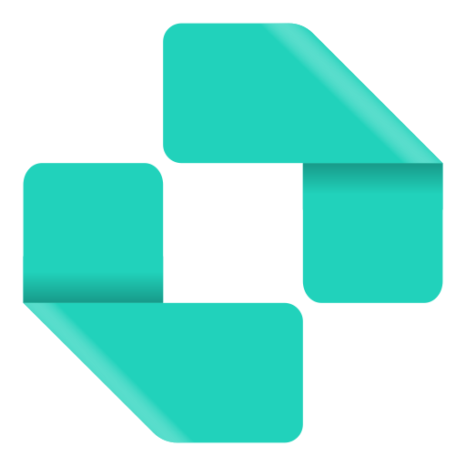

Where your exports go and how LumShot behaves on your computer.

LumShot is a desktop screenshot tool built with privacy in mind. We collect as little as possible, keep your data on your own computer, and work fully offline once your license is activated.
When you activate your license, LumShot sends your license key and a fixed activation label ("LumShot") to our licensing provider, Polar.sh, to confirm your purchase. We do not send a device identifier, hardware ID, machine name, or any other personal information.
Your preferences — capture hotkey, theme, export folder, watermark text, and similar options — are stored locally on your computer. They are never read by us or transmitted anywhere.
Text recognition (OCR and Extract Text) and sensitive-data detection (Auto-Redact) run entirely on your device using a bundled, offline engine. Your screenshots and any extracted text are never uploaded.
Reset your settings: delete the %APPDATA%\lumshot\ folder on Windows. Deactivate your license: open Settings › License and deactivate to free your activation slot. Use offline: after the one-time activation, LumShot works entirely offline.
Questions about your data? Email support@lumshot.app or visit lumshot.app.
LumShot ships with the following open-source libraries, each under a permissive license that allows commercial use.